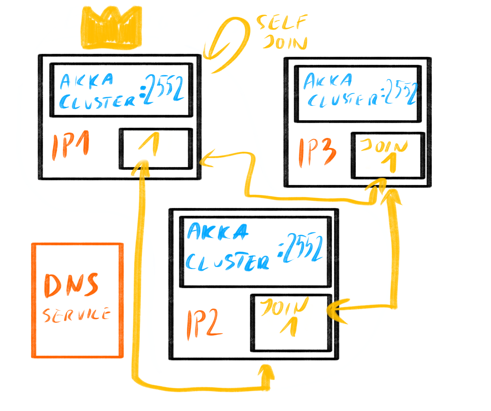

Bootstrap process
Below is a description of the bootstrap process in more detail. All configuration properties references below are in the akka.management.cluster.bootstrap section.
- Each node discovers its “neighbours” using Akka Discovery
- Some initial negotiation between the nodes must take place to safely form a new cluster when there is no existing cluster.
- The node starts to probe the Contact Points of the discovered nodes (which are HTTP endpoints, exposed via Akka Management by the Bootstrap Management Extension) for known seeds to join.
- When a cluster exists the seed nodes are returned from probing the discovered Contact Points. It can immediately join such seed nodes and the following steps for the initial bootstrap are not needed.
- When no cluster exists yet, none of the contacted nodes return any seed nodes during the probing process. The following takes place to create a new cluster:
- A service discovery lookup is done every
contact-point-discovery.interval - If discovery returns the same Contact Points for the
contact-point-discovery.stable-margin. This is to prevent join decisions being made based on fluctuating Contact Points. - At least
contact-point-discovery.required-contact-point-nrnodes have been discovered. - Communication with all discovered Contact Points have been confirmed via successful HTTP request-response.
- Each node will discover that no cluster exists by probing each other and getting no
seed-nodes, and a new one should be formed, they know all their addresses, and decide that the “lowest” sorted address is to start forming the cluster. - The lowest address node (e.g. “A”) notices the same, and makes the decision to join itself.
- Once the lowest addressed node has joined itself, it has formed a new cluster.
- Other nodes notice that A has started returning itself as a seed-node in the Contact Point responses.
- Any node, including X, immediately joins such seed node that it has observed in the Contact Point process.
- Nodes continue probing the other nodes, and eventually will notice any of the existing nodes that are part of the cluster, and immediately join it.
- Eventually all nodes have joined the same cluster, the process is complete.
- A service discovery lookup is done every
The illustration below may be of help in visualising this process:

Cluster formation in a dynamic environment
It is important to realise no dynamic and automatic cluster joining solution provides 100% safety, however the process presented here is very close to it. Please note that the often used claim of using a consistent data store for the seed-nodes also is not 100% safe (sic!), since races could occur between the node having discovered a node from the strongly consistent store and attempting the join operation.
Akka bootstrap’s solution is prone to very few and rather rare races. Built-in protection against the race cases exists in the form of the stable timeout, which means that if any changes are being observed in discovery, the decision making is delayed until the observation is stable again. This prevents initiating joining while discovery is still inconsistent.
Note also that the bootstrap process does NOT rely on full consistency of the discovery mechanism when adding new nodes to an existing cluster. This is very desirable, since this situation usually occurs when dynamically scaling up due to increased load on your service, and some services may indeed not be fully consistent then. However, the Akka Cluster membership protocol IS strongly consistent, and it is the source of truth with regards what the cluster is consisting of, and no external system can have more reliable information about this (since it could be outdated). This is why the Contact Point probing mechanism exists, and even if discovery would only return partial or even different set of nodes for each lookup the probing would allow the node still to join all the right nodes, thanks to how Akka Cluster’s membership and gossip protocols work. Summing up, the bootstrap mechanism works well for adding nodes to the system, even under load, even if the DNS system is not completely consistent.
If however we are talking about an inconsistent DNS lookup response during the Initial Bootstrap, the nodes will be delayed forming the cluster as they expect the lookups to be consistent, this is checked by the stable-margin configuration option.
It is crucial for the nodes to have a consistent view of their neighbours for the Initial Bootstrap. Otherwise multiple nodes could self-join and start multiple clusters.
Customizing Join Behavior
The above section explains the default JoinDecider implementation. It is possible to replace the implementation with configuration property join-decider.class. See reference.conf and API documentation.